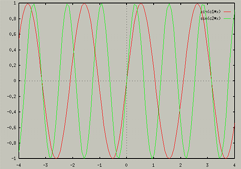
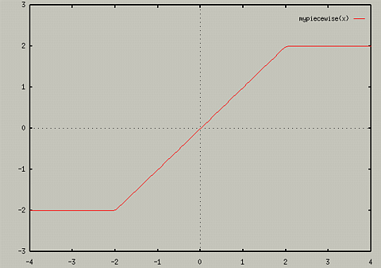

Defining your own variables
GnuPlot allows you to define your own constants and functions. To
define a constant, just use
- constant_name = expression
For example,
This could be useful for changing a constant in an expression, for
example,
- c = 3
- plot sin(c*x)
- c=4
- replot
The replot command would change the graph to reflect the new
constant. Note that you cannot overlay graphs of the same function
using differant values for a constant. The replot command reevaluates
the function, so it will always use the current value of a
variable. For instance, the preceding example would just plot the
graph of sin(4*x). If you wanted to overlay graphs with two
differant constants, you would need to use two differant constants,
i.e.,
- c1=3
- c2=4
- plot sin(c1*x)
- replot
sin(c2*x)
. This would produce the following graph

You could then change any of the constants and just replot to see the
effects of changing the constant.
Defining your own functions
The syntax for defining your own functions is as follows:
- function-name(parameters) =
expression
Here are some simple examples:
- sinc(x) = sin(pi*x)/(pi*x)
- len3d(x,y,z) = sqrt(x*x+y*y+z*z)
- myfunc(x,y) = (1+ x**2 + (2/3)*y**2)/(sin(x*45*y)+
exp(-1*(x*y*(-1/3))))
You can use these functions like any other functions in GnuPlot,
- plot sinc(x)
print len3d(2,3,4)- splot
myfunc(x,y)
Using Condition Statements in Function Definitions
It is possible to define piece-wise function is GnuPlot. Gnuplot uses
the if statement syntax of C. For instance, you could define your own
absolute value function by the following:
- myabs(x) = (x > 0) ? x : -x
Gnuplot first evaluates the expression in the parenthesis. If it is
true, it then performs the expressions after the "?" mark. If the
expression in the parenthesis is false, it evalues the expression
after the ":". You can also define more complex piece-wise functions
by nesting the if statements. For example,
- mypiecewise(x) = (x > 2) ? 2 : ((x < -2) ? -2 : x)
- plot mypiecewise(x)
produces the following graph:

For more examples, see help user-defined
Table of Contents - Previous - Evaluating Expressions - Next - Changing Variables
College of Natural Sciences /
University of Northern Iowa /
manager@cns.uni.edu
Copyright © 1996 College of Natural Sciences. All Rights Reserved.
Last Modified: 11/1/96